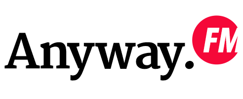

由 JJ Ying 和 Leon Gao 主持的设计杂谈
联系我们 • iTunes 订阅 • 荔枝 FM 订阅
2
当年的那些图标大师们
主播：
JJ Ying
&
Leon Gao
日期：2015 年 10 月 9 日
比起「字体设计师」、「工业设计师」等可以追述一些年头的 title 来说，「图标设计师」出现的年限其实还是非常短暂的，即使是 GUI 时代的鼻祖 Susan Kare 这样的人物其实也就离我们二三十年的光景而已，但他们当中依然已经有了一些可以树碑立传的人物出现了。
立即收听
更多详情
1
日本街头的图形标识
主播：
JJ Ying
&
Leon Gao
日期：2015 年 10 月 9 日
好基友俩刚带着各自的老婆一起去游了一次日本，对于沿途日本所见的各种视觉设计进行了一番点评，从路牌到吉祥物，日本的设计处处透露出他的迷人。好基友俩刚从日本旅游回来，对于沿途日本所见所闻进行了一番点评，从路牌到吉祥物，日本的设计处处透露出他的迷人。
立即收听
0
Anyway.FM 诞生志
日期：2015 年 10 月 9 日
Anyway.fm 是两个闷骚男抒发对设计热情的地方、Anyway.fm 是两个老男人吐槽世界的地方、Anyway.fm 也是一对好基友想把自己的见解分享给更多人的地方。总之，Anyway.fm 是一个设计师自嗨项目，如果你对设计有兴趣，也想听我们每个月随意聊聊，欢迎在 Apple Podcast、荔枝 FM、蜻蜓 FM 等平台订阅我们。